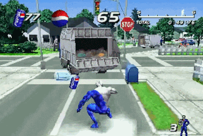
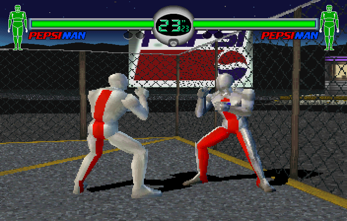

Pepsiman's appearances
Pepsiman commericals. WARNING: clips are old!
This is the cover art of the Pepsiman video game for PlayStation.
Pepsiman is an action game where you control Pepsiman and deliver Pepsi to people who need it. In each stage, the screen advances forward automatically, and you have to dodge obstacles while collecting Pepsi cans to reach the end.
Pepsiman has also appeared in the game "Fighting Vipers" for the Sega Saturn as a secret unlockable character.
Here is a link to a speedrun of Pepsiman. It is incredibly entertaining to watch even if you don't know anything about the game or speedrunning. The aim of speedrunning is to complete a game as quickly as possible.
If you want more Pepsiman content, check out YouTube for some more videos made on Pepsiman!
You can also go to the Pepsiman subreddit, r/pepsiman.